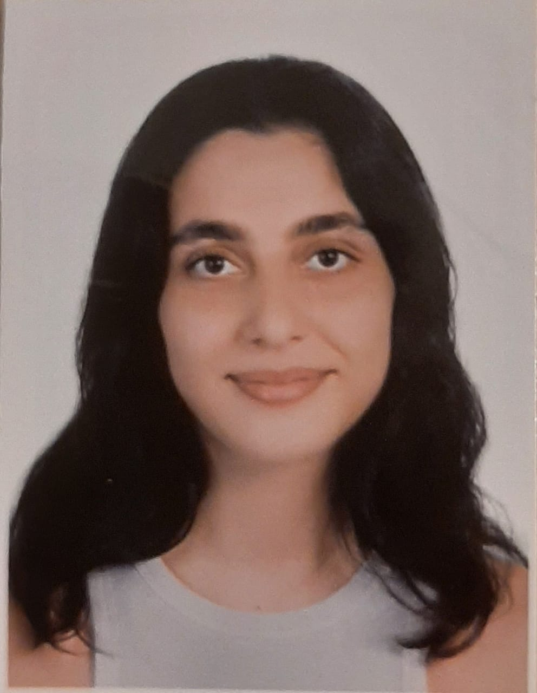

Tala Ismail

Summary
I'm a fresh computer science graduate aiming for a full stack developer job.I'm a hadrworking person and a team player.
Education
- Lebanese American University, Beirut, Lebanon (Aug 2021-June 2024)
Bachelor of Sciences in Computer science
- Al-Mayadine International School, Tyre, Lebanon (Sep 2006–June 2021)
Lebanese Baccalaureate – Life Science
Work Experience
- WzTechno, Beirut, Lebanon
Position: intern
- Learned how to work with HTML, CSS.
- Excelled in WordPress development, mastering theme creation, online edits, and issue troubleshooting.
Skills
- Soft Skills: Time management, Team collaboration, Problem-solving mindset, Client-oriented mindset, Accountability.
- Computer Skills: Object-oriented programming (OOP), Java skills, Python Skills, operating systems (Linux), knowledge of network concepts, SQL skills, HTML/CSS/JS skills, PHP, C skills, C# Skills, WordPress, Android Studio, Flutter, Git, Unity, Roblox Studio, Microsoft Office Suite.
- language Skills: Native Language- Arabic | bilingual proficiency (C1) – English | bilingual proficiency (C1) – French
Certifications:
Other